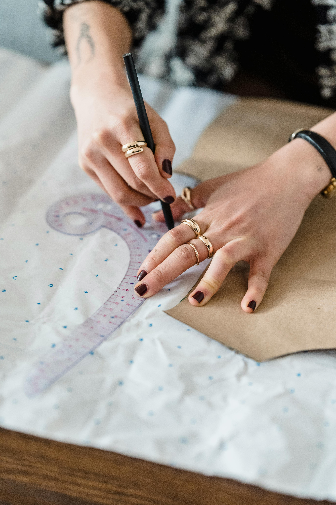
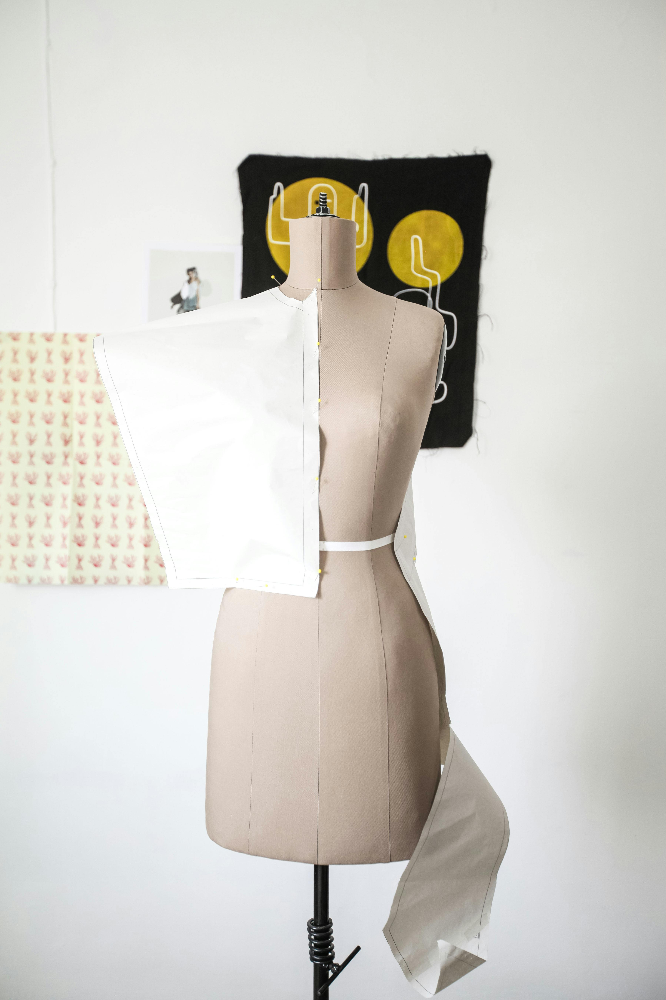

Patternmaking and Draping

Home
Patternmaking is taking the measurements of a person's body, and being able to create a draft of the pieces needed. Draping is putting scrap fabric directly onto a person's body or a dress form (mannequin), and being able to make a pattern from that. I have found both of these methods to be fun and rewarding, but sometimes they can be a bit frustrating.
For both patternmaking and draping, the end result is a paper pattern. The process to get to there is different. With patternmaking by drafting, you are working with two dimensional paper to create someting that must fit a three dimensional object that moves and breathes, with only your measurements, a ruler and a pencil. With draping, you are able to put the two dimensional fabric directly onto the body, and observe and manipulate the way it hangs off or hugs it. I personally found draping to be much easier when I first started, and I still do. However, I think that drafting is a more accurate and reproducable, and all it takes is practice!
The easiest way to start off the drafting process is to have a clear idea of what you are making. If it is a garment, determine waistline placement, armhole and strap configuration neckline design and any other details. These can always be changed, but it's a good plan to have at least a baseline. If it is not, plan out the dimensions and general shape of the creation. Then, gather your supplies. For drafting, I prefer to use a stiff paper, such as the thick paper bags from a store. I like to use a good black or blue pen, but if I don't have an exact idea of what I want, I will use a pencil. It is important to use a good straight ruler, I prefer the wood ones or a clear one I can easily see through to measure against other markings. Another important tool is the French ruler, it helps to round out neck and armholes.
Draping is a simple process, but it can create difficult to work with patterns. Start off by choosing your draping fabric. I personally like to use a light colored cotton or cotton muslin, they provide good structure while having a heavy drape. Then, cut out a piece of fabric bigger than the pattern piece you're making. Pin it to your dress form with straight pins. Using pins and a marking utensil, mark out where you need the seamlines to be. You should also create necklines, armholes, waistlines and closures. To make a piece of fabric tighten on one specific area, pinch the fabric until a portion protrudes, then pin flush to the dress form. You can cut away the excess. That is called a dart or a pucker.
Below is the video that I learned how to draft off of. I found it to be immensely helpful and still come back to it if I get stuck.